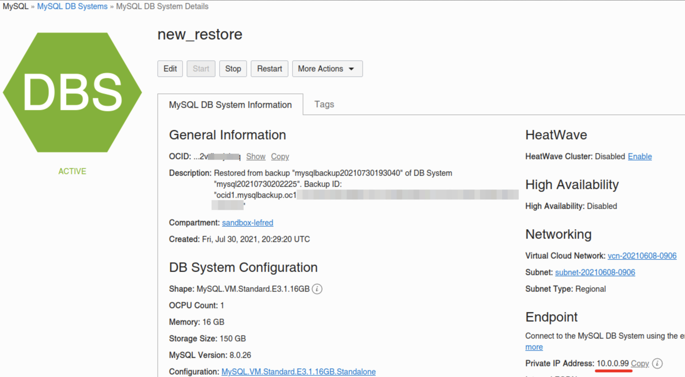
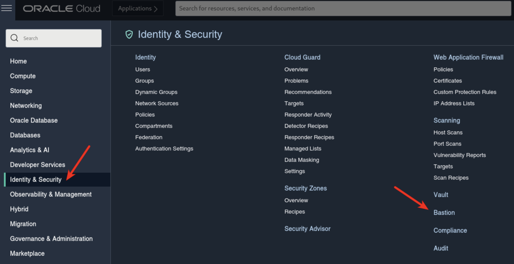
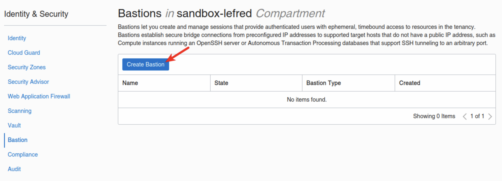
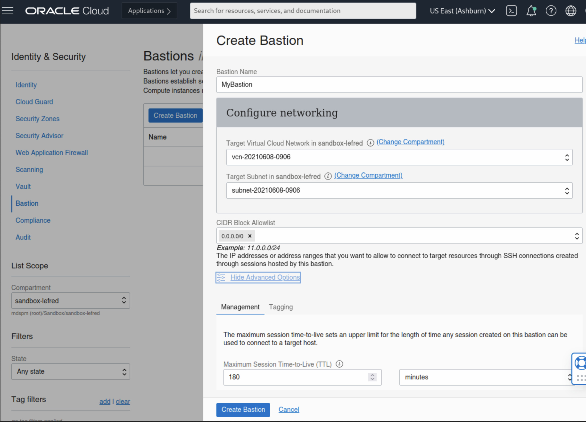
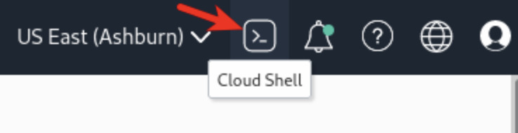
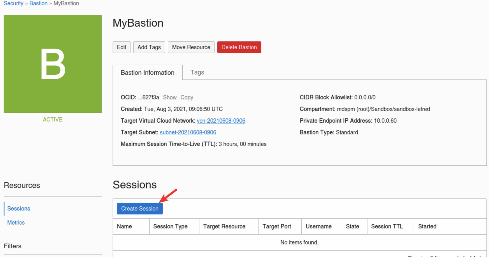
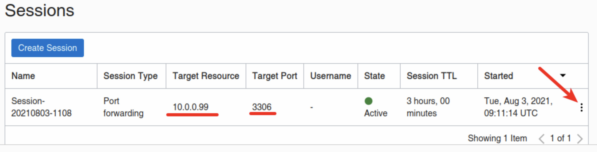
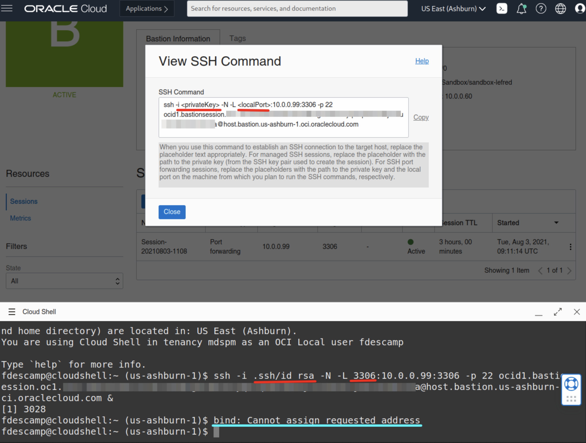
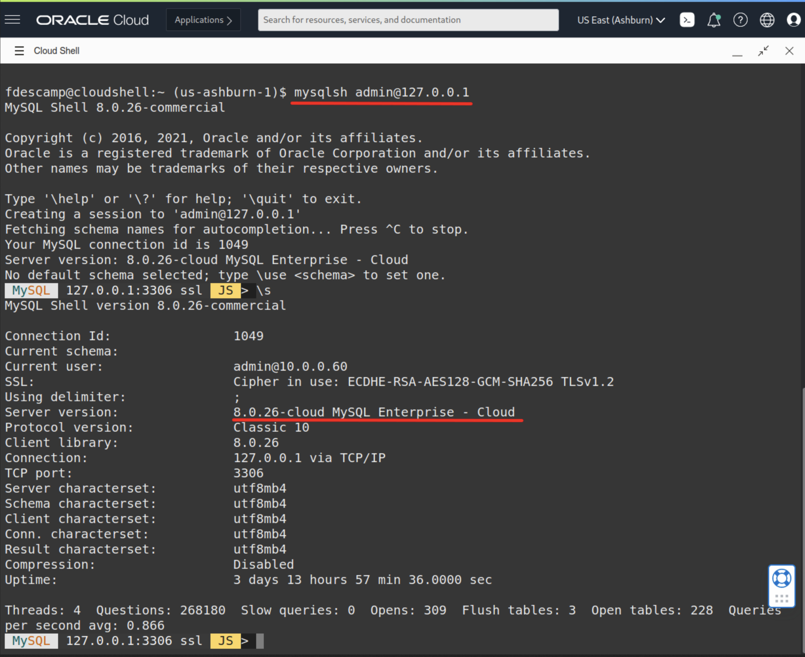

<div class="initial-content">
  <div id="main" role="main">

  <article class="page has-sidebar" itemscope itemtype="https://schema.org/CreativeWork">
    <meta itemprop="headline" content="Using OCI Cloud Shell &amp; Bastion with MySQL Database Service">
    
    <meta itemprop="datePublished" content="2021-10-26T16:48:00+00:00">
    


    <header>
      <h1 id="page-title" class="page__title" itemprop="headline">Using OCI Cloud Shell &amp; Bastion with MySQL Database Service
</h1>
      


    </header>

    <section class="page__content" itemprop="text">
      

        <p>In 2021, Oracle added a Bastion Service to Oracle Cloud Infrastructure (OCI). Along with it, the OCI Dashboard now features the ability to use a browser-based terminal: Cloud Shell.</p>

<p>Today, we’ll show you how to use these two components to connect from a browser to a MDS DB System.</p>

<p>Key topics covered in this tutorial:</p>

<ul>
  <li>Setting up a Bastion Service</li>
  <li>Starting a Cloud Shell</li>
  <li>Initiating a Bastion Session</li>
  <li>Connecting to MDS</li>
</ul>

<p>Let’s get started!</p>

<h2 id="find-the-mysql-dbs-ip-address">Find the MySQL DBs IP address</h2>

<p>First, we need the MySQL DB System’s IP:</p>

<picture class="aligncenter">
                <source srcset="assets/system-details-IP.jpg 1x" />
                
            </picture>

<p>So, in this example, the MDS Instance we want to connect to has an IP of 10.0.0.99.</p>

<h2 id="set-up-the-bastion-service">Set up the Bastion Service</h2>

<p>Next, we’ll create a new Bastion Service that will allow us to create a SSH Tunnel to our MySQL DB System.</p>

<h3 id="connect-to-the-bastion-service-dashboard">Connect to the Bastion Service Dashboard</h3>

<p>The Bastion Service’s dashboard is located in <strong>Identity &amp; Security</strong>:</p>

<picture class="aligncenter">
                <source srcset="assets/identity-security-dash.jpg 1x" />
                
            </picture>

<blockquote class="notice">
  <p><strong>Note:</strong> If this is the first time you create a Bastion, the list will be empty and you just need to create one:</p>
</blockquote>

<picture class="aligncenter">
                <source srcset="assets/create-bastion-button.jpg 1x" />
                
            </picture>

<h3 id="set-up-the-vcn">Set up the VCN</h3>

<p>Now, we need to select the Virtual Cloud Network (VCN), the subnet, and a block of allowed IPs. Since we don’t know the IP of the Cloud Shell, we’ll just use <code class="language-plaintext highlighter-rouge">0.0.0.0/0</code>:</p>

<picture class="aligncenter">
                <source srcset="assets/configuring-bastion.jpg 1x" />
                
            </picture>

<blockquote class="notice">
  <p><strong>Note:</strong> If you don’t like to use 0.0.0.0/0, you need to add the public IP used by Cloud Shell with \32:</p>
</blockquote>

<div class="language-console highlighter-rouge"><div class="highlight"><pre class="highlight"><code><span class="go">curl ifconfig.me
</span></code></pre></div></div>

<p>Sample output:</p>

<div class="language-console highlighter-rouge"><div class="highlight"><pre class="highlight"><code><span class="go">1XX.XXX.XXX.XXX
</span></code></pre></div></div>

<h2 id="create-a-session">Create a session</h2>

<p>Now that the Bastion is created, we need to create a session that will be used to create the SSH Tunnel to MDS.</p>

<p>But before creating the session, we’ll start the Cloud Shell and generate a SSH Key we will use for the tunnel’s session.  We’ll take a look at that in the next section.</p>

<h2 id="cloud-shell">Cloud Shell</h2>

<p>To Start Cloud Shell, you just select the <strong>shell</strong> icon at the top right corner of the OCI Dashboard:</p>

<picture class="aligncenter">
                <source srcset="assets/cloud-shell-button.jpg 1x" />
                
            </picture>

<blockquote class="notice">
  <p><strong>Note:</strong> This will open the Cloud Shell in the browser. It may take some time to open the first time.</p>
</blockquote>

<h3 id="create-ssh-key">Create SSH key</h3>

<p>In the Cloud Shell, we can now create the SSH Key we need using the following command:</p>

<div class="language-console highlighter-rouge"><div class="highlight"><pre class="highlight"><code><span class="go">ssh-keygen -t rsa
</span></code></pre></div></div>

<p>As you can see below, the public key we need will be stored in <code class="language-plaintext highlighter-rouge">~/.ssh/id_rsa.pub</code>:</p>

<p>&lt;picture class=”aligncenter assets/public-key-location.jpg 1844 1098 “The public key is stored in”&gt;
                &lt;source srcset=”~/.ssh/id_rsa.pub:” 1x” /&gt;
                &lt;img loading=”lazy” src=”~/.ssh/id_rsa.pub:”” data-original=”~/.ssh/id_rsa.pub:””  /&gt;
            &lt;/picture&gt;</p>

<h2 id="bastion-session">Bastion Session</h2>

<p>Now that we have all we need to create the Bastion Session for the SSH Tunnel, we can go back to the Bastion we created earlier and create a new session:</p>

<picture class="aligncenter">
                <source srcset="assets/create-new-bastion-session.jpg 1x" />
                
            </picture>

<p>After you select <strong>Creation Session</strong>, you will need to do the following:</p>

<ul>
  <li>set the <strong>SSH port forwarding session</strong> as <em>Type</em></li>
  <li>add the MySQL Database System’s IP</li>
  <li>paste in the SSH Public Key</li>
</ul>

<p>Once the session is created (which may take upwards of two hours), you will have something that looks like this:</p>

<picture class="aligncenter">
                <source srcset="assets/dotted-menu-button.jpg 1x" />
                
            </picture>

<h3 id="locate-the-ssh-command">Locate the ssh command</h3>

<p>If you select the <strong>kebob</strong> icon (the 3 vertical dots), you can view or copy the ssh command we need to run in Cloud Shell:</p>

<picture class="aligncenter">
                <source srcset="assets/view-ssh-command.jpg 1x" />
                
            </picture>

<blockquote class="notice">
  <p><strong>Notes:</strong></p>

  <ul>
    <li><strong><code class="language-plaintext highlighter-rouge">-i &lt;privateKey&gt;</code></strong> is not really required since we only have one single key for the moment.</li>
    <li>
      <p>The error message <strong><code class="language-plaintext highlighter-rouge">bind: Cannot assign requested address</code></strong> is not a problem.<br />
This message only displays because because the Cloud Shell tries to bind on ipv6 too. If you want to avoid it, just add <strong><code class="language-plaintext highlighter-rouge">-4</code></strong> between ssh and <strong><code class="language-plaintext highlighter-rouge">-i</code></strong> like this:</p>

      <div class="language-console highlighter-rouge"><div class="highlight"><pre class="highlight"><code><span class="go">  ssh -4 -i
</span></code></pre></div>      </div>
    </li>
    <li>Note the <strong><code class="language-plaintext highlighter-rouge">&amp;</code></strong> at the end of the main ssh command.</li>
  </ul>
</blockquote>

<h2 id="connecting-to-mds">Connecting to MDS</h2>

<p>And finally, we can connect to MySQL Database Service’s instance from Cloud Shell simply by using the MySQL Shell:</p>

<picture class="aligncenter">
                <source srcset="assets/cloud-connect-from-shell.jpg 1x" />
                
            </picture>

<p>As you can see, it’s easy to connect from Cloud Shell once the Tunnel is ready!</p>

<blockquote class="notice">
  <p><strong>Recommendation:</strong> To <strong>Dump &amp; Load data</strong> to/from MDS, we recommend using a dedicated compute instance with multiple cores instead of Cloud Shell.</p>
</blockquote>

<h2 id="whats-next">What’s next</h2>

<p>To explore more information about development with Oracle products:</p>

<ul>
  <li><a href="https://developer.oracle.com/">Oracle Developers Portal</a></li>
  <li><a href="https://www.oracle.com/cloud/">Oracle Cloud Infrastructure</a></li>
</ul>


          <div class="sidebar sticky">
    <!-- <p><strong>Tags:</strong> <span class="tags">

            
            <a class="animated-link tag" href="/topics/oci">oci</a>
            <a class="animated-link tag" href="/topics/mysql">mysql</a>
            <a class="animated-link tag" href="/topics/always-free">always-free</a>
            </span>
    </p> -->
  


<div itemscope itemtype="https://schema.org/Person">

  

  <div class="author__content">
    
      <h3 class="author__name" itemprop="name"></h3>
    
    
  </div>

  <div class="author__urls-wrapper">
    <ul class="author__urls social-icons">
      

      

      

      

      

      

      

      

      

      

      

      

      

      

      

      

      

      

      

      

      

      

      

      

      

      

      
    </ul>
  </div>
</div>

  
  
  

  </div>


      </section>

      <footer class="page__meta">
        
        


        

  <p class="page__date"><strong><i class="fas fa-fw fa-calendar-alt" aria-hidden="true"></i> Updated:</strong> <time datetime="2021-10-26T16:48:00+00:00">October 26, 2021</time></p>


      </footer>
    </div>

  </article>
</div>

</div>

